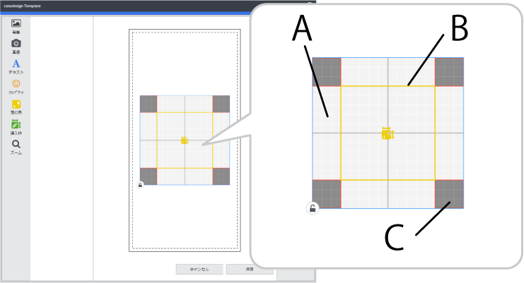

Al crear una plantilla específica para su uso en la impresión de láminas, se crea un área de impresión (80 mm × 80 mm) y un área de edición (50 mm × 50 mm) en el centro de la plantilla.
 A: Área de impresión de la lámina B: Área de la lámina C: Área de impresión de la lámina prohibida (No se imprime nada en esta área.)
El área de impresión de la hoja indica el rango de impresión dentro de la plantilla. Si arrastra esta área para desplazarla, la posición de impresión relativa al objeto que se va a imprimir cambia.
: Actívelo cuando no desee cambiar la posición o el tamaño del objeto.
Distribuya imágenes, caracteres y áreas de edición dentro del área de impresión. Si hay elementos fuera de esta área, se producirá un error y no podrá guardar la plantilla. A veces, es mejor limitar las posiciones de diseño del objeto en función del modelo que se esté utilizando. Un ejemplo es cuando es posible que los resultados de impresión sean borrosos aunque todos los elementos estén dentro del área de impresión. Para obtener más información, consulte la documentación del modelo que está utilizando.